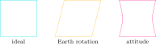

Definition
Systematic (predictable from orbit and sensor models):
- Earth rotation: while successive lines are acquired the ground moves east: the image is skewed (strongest at the equator);
- panoramic distortion and Earth curvature: pixel size grows as of the scan angle for a scanner, plus curvature for wide swaths;
- scan non-linearity, mirror velocity variations.
Random (need ground control):
- attitude: roll shifts lines across track, pitch along track, yaw rotates them; altitude changes alter scale;
- relief displacement: a point at height seen at off-nadir angle
 is displaced by about away from nadir (towards the sensor for radar).
is displaced by about away from nadir (towards the sensor for radar).
Picture

Intuition
A scanner paints the image line by line from a moving, slightly wobbling platform over a rotating, curved, bumpy Earth; every one of those motions bends the picture.
Pitfall
Relief displacement cannot be removed by a polynomial: it needs a digital elevation model (orthorectification).